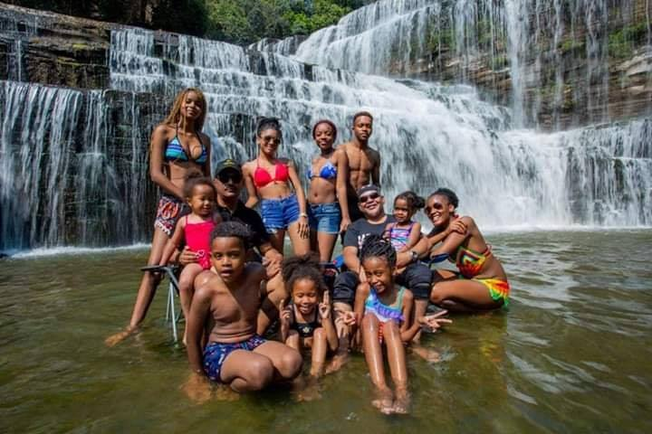
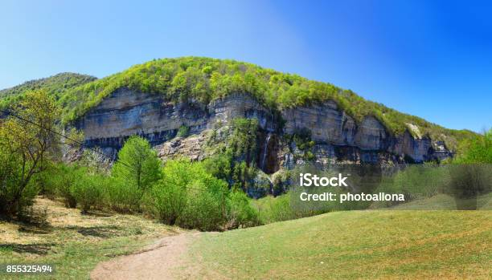
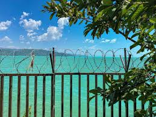
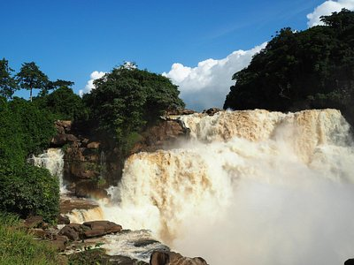

Chute d'eau principale
La chute spectaculaire qui forme le cœur de la cascade.

Eaux turquoise
Les eaux limpides aux couleurs turquoises fascinantes.

Rivière en contrebas
La rivière qui coule paisiblement au pied de la cascade.

Paysage verdoyant autour de la cascade
La végétation dense qui entoure le site naturel.

Vue panoramique de la cascade
Une vue large offrant une perspective spectaculaire.

Vue panoramique de la cascade
Un autre angle montrant la beauté de la cascade et son environnement.
Un joyau naturel au cœur de la forêt
La Cascade aux Eaux Cristallines est l’un des trésors cachés de Kinsatu.
Son eau limpide et ses chutes spectaculaires offrent un spectacle à couper le souffle,
propice à la détente et à l’émerveillement.
Les étudiants pourront profiter d’une balade rafraîchissante, prendre des photos magnifiques
et apprécier le calme apaisant des lieux.